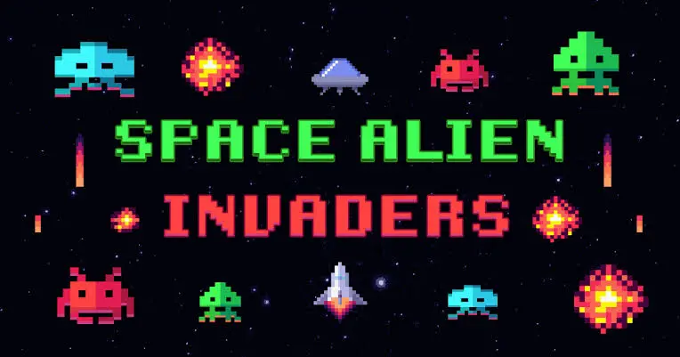
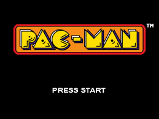
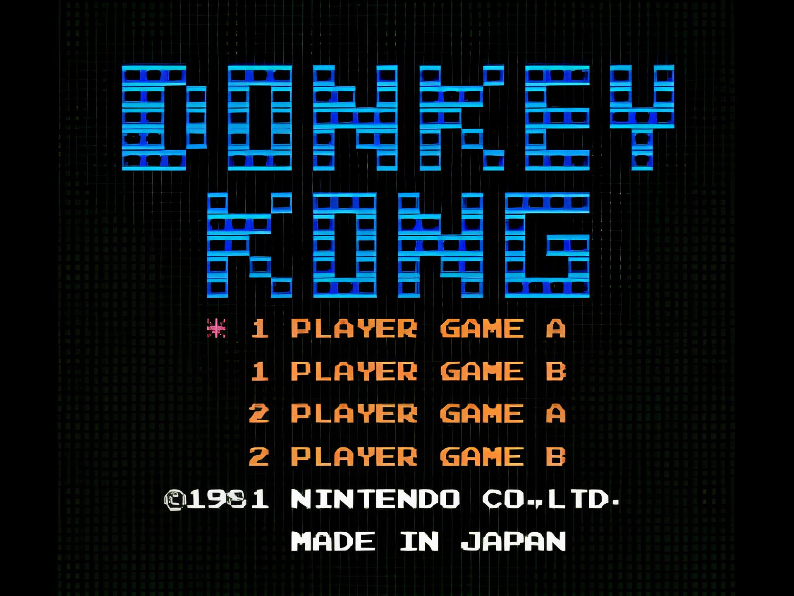
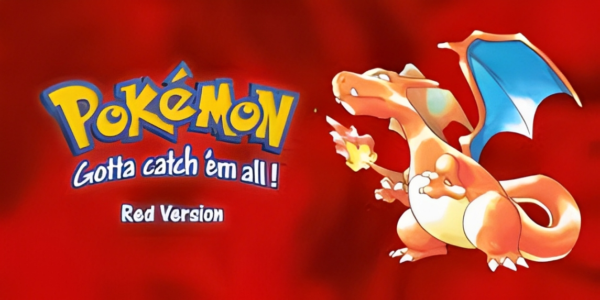
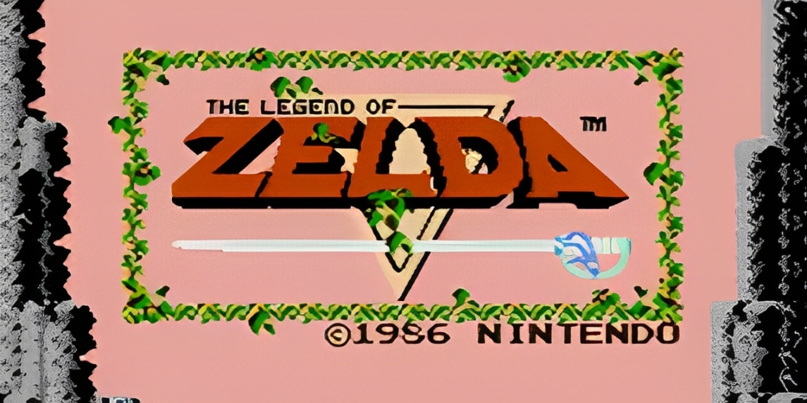

Jogos antigos que fizeram história
Jogos antigos marcaram gerações e ainda hoje despertam nostalgia em muitos jogadores. Clássicos como Super Mario Bros., Pac-Man, Space Invaders, Donkey Kong, The Legend of Zelda e Pokémon Red foram pioneiros na indústria dos videogames, combinando jogabilidadesimples com desafios envolventes. Mesmo com gráficos limitados, esses jogos conquistaram fãs pelo mundo todo graças à sua criatividade e diversão atemporal. Além disso, muitos deles influenciaram diretamente os jogos modernos, mostrando que boas ideias resistem ao tempo.
Lista com jogos influentes:
1978 – Space Invaders
Se Pong fez as pessoas se acostumarem a jogar em público, Space Invaders levou o vício a um novo patamar. Foi o produto que deu um sopro de ânimo a um abatido nicho de mercado e que inspirou muitos pretendentes a designers a seguir na profissão (Shigeru Miyamoto, da Nintendo, e Hideo Kojima, da Konami, se declaram influenciados pelo jogo). Em 1978, a presença de Space Invaders no Japão era maciça – em bares, restaurantes, shopping centers. Em dois anos, a Taito distribuiu 360 mil máquinas no mundo (um sexto delas apenas nos EUA), que renderam mais de US$ 2 bilhões em fichas (moedas, no caso) ao final de 1982.
1980 – Pac-Man
O grande público já estava mais acostumado aos videogames na entrada da nova década, o que fez o sucesso de Pac-Man algo inevitável. Pela primeira vez o jogador pôde se relacionar realmente com um protagonista – mesmo que ele fosse uma bola amarela com crises de apetite e perseguida por fantasmas obcecados. Antes do herói criado por Toru Iwatani (diz a lenda que ele se inspirou no formato de uma pizza cortada para criá-lo), games eram estrelados por personagens anônimos. Mais do que um fenômeno cultural e midiático que rendeu rios de dinheiro aos envolvidos, Pac-Man era a peça que faltava para estabelecer definitivamente os games no imaginário popular.
1981 – Donkey Kong
O marco zero das narrativas nos games também é celebrado por ter sido o primeiro jogo dirigido por Shigeru Miyamoto, na época um promissor designer da Nintendo. Em Donkey Kong, o vilão batiza o jogo, deixando para o herói Jumpman o papel de coadjuvante (rebatizado de “Mario” anos mais tarde, o encanador acabou tornando-se o maior protagonista da história dos games). Inspirado pelo filme King Kong, Miyamoto determinou a premissa do gênero “plataforma” – correr e pular para alcançar novos caminhos -, que dominou os games durante mais de uma década. Curiosidade: até hoje há pessoas tentando quebrar o recorde do jogo. A disputa entre os dois principais jogadores foi retratada no ótimo documentário King of Kong.
1985 – Super Mario Bros.

Criado por Shigeru Miyamoto, Super Mario Bros. revolucionou de cara, obrigando o jogador a seguir sempre adiante, explorando oito mundos com uma inédita variedade de cenários e utilizando poderes que nenhum título oferecia. Mario pode crescer, atirar fogo, correr e saltar, além de eliminar inimigos de maneiras diferentes. Nunca um herói virtual foi controlado de modo tão refinado e preciso. Simples de aprender e difícil de dominar (e largar), foi inspiração para todos os games de ação.
1996 - Pokémon Red
Pokémon Red foi lançado originalmente em 27 de fevereiro de 1996 no Japão para o Game Boy da Nintendo, junto com sua versão parceira, Pokémon Green (que só chegou oficialmente ao Ocidente anos depois). Foi o primeiro jogo da franquia Pokémon a ser lançado, marcando o início de uma das maiores séries de videogames da história. Nesse jogo foi lançada a região de Kanto sendo a 1º Geração de pokémons e trazendo o icônico trio de inicias Charmander de fogo, Squirtle de água e Bulbassauro de Grama, alem do mascote da franquia o pokémon elétrico Pikachu.
1986 - The Legend Of Zelda
The Legend of Zelda (1986) é o primeiro jogo da famosa franquia da Nintendo, lançado originalmente para o Nintendo Entertainment System (NES) em 21 de fevereiro de 1986 no Japão. Criado por Shigeru Miyamoto e Takashi Tezuka, o jogo revolucionou o gênero de ação e aventura nos videogames. No jogo, o jogador controla Link, um jovem herói encarregado de resgatar a Princesa Zelda e derrotar o vilão Ganon, que roubou a Triforce do Poder para dominar o reino de Hyrule. Para salvar Zelda, Link precisa encontrar os oito fragmentos da Triforce da Sabedoria, escondidos em labirintos espalhados pelo mundo.